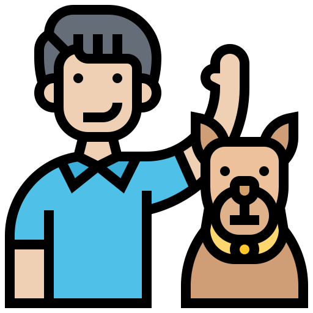

O que podemos fazer por você?

Hospedagem
Temos 2 opções de hospedagens, sendo elas: Hospedagem, onde você traz o seu pet a nossa hospedagem WalkDog e Pet Sitter, sendo o cuidador indo até a sua casa para cuidar do seu pet

Passeio Avulso
É um serviço de contratação única, ideal para você que busca uma solução esporádica. Nosso profissonal busca seu pet em sua casa, e após ter tido um excelente passeio com ele, o devolve em sua residência

Passeios (Assinaturas)
Temos a opção de passeio semanal, onde seu pet realiza 3 passeios na semana escolhida por você, e também a opção de passeio mensal, onde seu pet passeia por 3x na semana durante todo o mês.